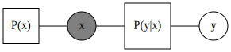
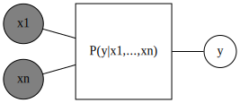
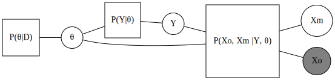

Generative vs. discriminative models
Thinking through the differences between generative and discriminative models.
ML
theory
factor graphs
PGMs
Generative and discriminative models are known to have complementary strenghts. Following Minka (2005) and Lasserre, Bishop, and Minka (2006), we will show how they can be seen to be at different ends of a spectrum, and then discuss some of their differences in detail.
We will work through the definitions and differences by considering probabilistic (graphical) models, specifically using the factor graph representation1. Throughout, we will focus on classification, where we are given a labelled data set \(D = \lbrace \left( x^i, y^i \right) \rbrace_N\) with inputs \(x^i = \left( x^i_1, \cdots, x^i_n \right)\) and labels \(y^i \in \lbrace 0, 1 \rbrace\), and we want \(P \left( y = 1 \vert x = \hat x, D \right)\) for some (new) \(\hat x\)2. The definitions and the generative-discriminative dichotomy are however more general, i.e. they are not restricted to the problem of classification.
1 Factor graphs are a more detailed representation of a probabilistic graphical model that specifies the factorization of the joint probability being modelled. See e.g. Loeliger (2004).
2 Note that actually determining which class to assign to \(\hat x\) requires a final decision. We will ignore this as well as discriminant functions, which combine the inference and the decision steps. See (Bishop 2006, sec. 1.5.4) for a discussion.
Generative models can be used to generate synthetic data
A discriminative model is one that provides \(P \left( y \vert x \right)\) directly. The name comes from the fact that we can view the distribution (together with the decision to choose the most probable value) as directly discriminating the value of the target \(y\) for any given instance \(x\).
Mirorring the definition of a discriminative model, a generative model is instead often defined as one that provides the joint probability \(P \left( x, y \right)\) in the form \(P \left( x \vert y \right)P \left( y \right)\), on which one can then use Bayes’ theorem to obtain \(P \left( y \vert x \right) \propto P \left( x \vert y \right)P \left( y \right).\) The graph representation for such a model is shown below.

A good reference on classification, which introduces and compares these approaches, is Bishop (2006, chap. 4).
The more general definition is that a generative model is one that can generate data via ancestral sampling, i.e. sampling from the priors and passing the sampled values through the graphical model. This includes the definition above, which also has a choice of factorisation. We can also turn our discriminative model into a generative one by adding a factor for \(P \left( x \right)\), such that it too models the joint distribution \(P \left( x, y \right)\). Put differently, the factorization used in the definition of the generative model above is not what makes it a generative model. It is rather the fact that it models the joint distribution. In order to distinguish between the (first) generative model and the extended discriminative model, which is also a generative model, Mitchell refers to the former as a Bayes classifier given that it uses Bayes theorem to recover \(P \left( y \vert x \right)\) (Mitchell 2020).

Note that we sometimes also find people stating that generative models are ones that capture the causal process by which the actual data (\(D\)) is generated. While it is true that one might build a generative model by thinking about the causal process, it could be that the causal data generation process requires \(P \left( y \vert x \right)\) rather than \(P \left( x \vert y \right)\). We therefore distinguish between generative models and generative processes.
Generative models consider a more restictive parameter space
Let’s now look at the fundamental difference between the two model types by considering them in all generality, and focusing on their parametrisation as done by Minka (2005).
We write the generative model, with parameters, as
\[ P_1 \left( x, y \vert \theta \right) = P_{11} \left( x \vert y, \theta \right) P_{12} \left( y \vert \theta \right). \]
We can train the model, i.e. perform inference, to obtain the posterior probability \(P \left( \theta \vert D \right)\) by considering the joint distribution
\[ \begin{align*} P_g \left( D, \theta \right) &= P_{01} \left( \theta \right) P \left( D \vert \theta \right) \\ &= P_{01} \left( \theta \right) \prod_i P_1 \left( x_i, y_i \vert \theta \right) \\ &= P_{01} \left( \theta \right) \prod_i P_{11} \left( x_i \vert y_i, \theta \right) P_{12} \left( y_i \vert \theta \right), \end{align*} \]
where we have used the iid assumption on the data.

Alternatively, we can use maximum likelihood estimation to find \(\hat \theta\). The BIASlab couse nicely explains the different approaches with examples (de Vries, Kouw, and Koudahl 2021).
Let’s now write the discriminative model, with parameters, as \(P_{21} \left( y \vert x, \theta \right)\). In order to compare it with the generative model, we extend the discriminative model by adding a probability over \(x\) and a second parameter in order to obtain the joint distribution
\[ P_2 \left( x, y \vert \theta, \phi \right) = P_{21} \left( y \vert x, \theta \right) P_{22} \left( x \vert \phi \right), \]
but consider the same joint distribution by setting
\[ P_{21} \left( y \vert x, \theta \right) = \frac{P_1 \left( x, y \vert \theta \right)}{\sum_y P_1 \left( x, y \vert \theta \right)} \]
and
\[ P_{22} \left( x \vert \phi \right) = \sum_y P_1 \left( x, y \vert \phi \right). \]
The parameters \(\theta\) and \(\phi\) are of the same type, but (for now) assumed independent. We can again obtain the posterior distributions for the parameters by considering the joint distribution
\[ \begin{align*} P_d \left( D, \theta, \phi \right) &= P_{01} \left( \theta \right) P_{02} \left( \phi \right) P \left( D \vert \theta, \phi \right) \\ &= P_{01} \left( \theta \right) P_{02} \left( \phi \right) \prod_i P_2 \left( x_i, y_i \vert \theta, \phi \right) \\ &= P_{01} \left( \theta \right) P_{02} \left( \phi \right) \prod_i P_{21} \left( y_i \vert x_i, \theta \right) P_{22} \left( x_i \vert \phi \right) \\ &= \left( P_{01} \left( \theta \right) \prod_i P_{21} \left( y_i \vert x_i, \theta \right) \right) \left(P_{02} \left( \phi \right) \prod_i P_{22} \left( x_i \vert \phi \right) \right), \end{align*} \]
and inferring \(P \left( \theta, \phi \vert D \right)\).

We note that, due to the independence assumption, estimation of \(\theta\) and \(\phi\) decouples, namely if we use the factorization above to define
\[ P_d \left( D, \theta, \phi \right) =: P^1 \left( y, \theta \vert x \right) P^2 \left( x, \phi \right), \]
then we see that Bayes’ rule simplifies, that is
\[ \begin{align*} P \left( \theta, \phi \vert D \right) &= \frac{P_d \left( D, \theta, \phi \right)}{\sum_{\theta, \phi} P_d \left( D, \theta, \phi \right)} \\ &= \frac{P^1 \left( y, \theta \vert x \right) P^2 \left( x, \phi \right)}{\sum_{\theta , \phi} P^1 \left( y, \theta \vert x \right) P^2 \left( x, \phi \right)} \\ &= \frac{P^1 \left( y, \theta \vert x \right)}{\sum_\theta P^1 \left( y, \theta \vert x \right) } \frac{P^2 \left( x, \phi \right)}{\sum_\phi P^2 \left( x, \phi \right)} \\ &=: P \left( \theta \vert D \right) P \left( \phi \vert x \right). \end{align*} \]

Thus \(\hat \theta\) (or equivalently \(P \left( \theta \vert D \right)\)) is unaffected by the estimation of \(\hat \phi\) and is the same as what we would have obtained by performing inference on the original, non-extended discriminative model.
We see that the fundamental difference between the two models is down to the discriminative one considering a larger parameter space without the constraint \(\theta = \phi\). This reduces the (statistical) bias, but introduces variance.
Interestingly, there is no need to assume independence of \(\theta\) and \(\phi\). Considering a joint \(P \left( \theta, \phi \right)\) allows us to work with “hybrid” models.
Generative models require more assumptions
We have just shown that the generative model can be seen as considering a reduced parameter space. Furthermore, compared with the discriminative disctribution \(P_{21} \left( y \vert x , \theta \right)\), the joint distribution considered by the generative model is often hard to work with in practice and further simplifying assumptions are often necessary, or preferable, in order to make inference tractable.
To understand why generative models require more modelling assumptions, we will consider the case of Boolean inputs \(x = \left( x_1, \cdots, x_n \right)\), \(x_j \in \lbrace 0, 1 \rbrace\).
It can be instructive to update the factor graphs and draw some of the individual components of the input.


Let us now look at the parameters necessary for the generative model by first considering the conditional probability table for \(P\left( x \vert y \right)\) with \(x\) represented as a single vector.
| \(y = 0\) | \(y = 1\) | |
| \(x = (0, \cdots, 0)\) | \(\theta^0_{1}\) | \(\theta^1_{1}\) |
| \(x = (1, \cdots, 0)\) | \(\theta^0_{2}\) | \(\theta^1_{2}\) |
| \(\cdots\) | \(\cdots\) | \(\cdots\) |
| \(x = (1, \cdots, 1)\) | \(\theta^0_{2^n}\) | \(\theta^1_{2^n}\) |
We see that we have \(2 \times 2^n = 2^{n + 1}\) parameters. The (conditional) probability constraints (on the columns) bring this count down to \(2 \left( 2^n - 1\right)\).
The other factor in the generative model, \(P \left( y \right)\), is not an issue, as we only have one effective parameter given \(y\) is a Boolean variable.
For the discriminative model, we instead have to consider \(P \left( y \vert x \right)\). Here the conditional probability table is flipped.
| \(x = (0, \cdots, 0)\) | \(\cdots\) | \(x = (1, \cdots, 1)\) | |
| \(y = 0\) | \(\theta^0_{1}\) | \(\cdots\) | \(\theta^0_{2^n}\) |
| \(y = 1\) | \(\theta^1_{1}\) | \(\cdots\) | \(\theta^1_{2^n}\) |
Simply flipping the conditionality, and again using the conditional probability constraints, leads to \(2^n\) effective parameters. This is less parameters than those for the generative model. For large \(n\), essentially half as many.
What is often done in generative models is to add further simplifying assumptions. In the Naive Bayes classifier for example, we assume each \(x_i\) is conditionally independent of all other \(x_{-i}\) given \(y\). Together with the product rule, this gives
\[ P \left(x \vert y \right) = \prod_i P \left( x_i \vert y \right). \]
We can visualise this more granular factorization of the conditional probability by drawing the factor graph. This time using plate notation.

Now, each \(x_i\) has its own conditional probability table, which is simply
| \(y = 0\) | \(y = 1\) | |
| \(x_i = 0\) | \(\theta^0_{0}\) | \(\theta^1_{0}\) |
| \(x_i = 1\) | \(\theta^0_{1}\) | \(\theta^1_{1}\) |
and the conditional probability constraints bring the number of parameters per input variable from four to two. Thus, overall we have \(2 n\) parameters to estimate. This is now less than the \(2^n\) of the discriminative model (provided \(n > 2\)).
On top of the number of parameters that need to be estimated, in order to reliably estimate them, we need to observe each distinct instance multiple times. This is discussed in (Mitchell 2020).
We thus can, and often do, introduce futher bias in generative models in order to make them tractable. A consequence of this is that generative models can be less accurate, if they (i.e. the small world model) don’t reflect the large world model3, but (when they do) generative models require less data to train.
3 This is Savage’s terminology, as presented by McElreath in Statistical Rethinking: “All statisitcal modelling has these two frames: the small world of the model itself and the large world we hope to deploy the model in.” (McElreath 2020, 19).
Generative models can deal with missing data
Let’s turn to the often mentioned fact that generative models can deal with missing data. What this means is that they can still make predictions if given a vector of inputs \(\hat x = \left( \hat x_1, \cdots, \hat x_k, \bar x_{k+1}, \cdots, \bar x_n \right) = \left( \hat x_o, \bar x_m \right)\), where \(\bar x_m\) are missing, whereas discriminative models can’t.
When it comes to predicting \(\hat y\) given \(\hat x\) (and \(D\)), we need the posterior predictive distribution, namely
\[ \begin{align*} P \left( \hat y \vert \hat x, D \right) &= \int_\Theta P \left( \hat y, \theta \vert \hat x, D \right) \mathrm{d} \theta \\ &= \int_\Theta P \left( \hat y \vert \hat x, \theta \right) P \left( \theta \vert D \right) \mathrm{d} \theta, \end{align*} \]
where we assume that the past and future observations are conditionally independent given \(\theta\).
In the case of missing inputs, we want to consider
\[ \begin{align*} P \left( \hat y \vert \hat x_o, \theta \right) &= \sum_{\bar x_m} P \left( \hat y, \bar x_m \vert \hat x_o, \theta \right) \\ &= \sum_{\bar x_m} P \left( \hat y \vert \hat x_o, \bar x_m , \theta \right) P \left( \bar x_m \vert \hat x_o, \theta \right) \end{align*} \]
and plug this into the posterior predictive distribution.

In the case of discriminative models, we have no way of evaluating the necessary probabilities because we only have \(P_{21} \left( y \vert x, \theta \right)\). We therefore cannot obtain \(P \left( \bar x_m \vert \hat x_o, \theta \right)\). We would need to instead resort to some form of imputation. This equates to making assumptions about the distribution \(P \left( x \right)\), which we would instead have if we consider an extended discriminative model. These can indeed deal with missing observations, given they model the full joint distribution, explicitly via \(P \left( y \vert x \right)\) and \(P \left(x \right)\).

In the generative case, we instead have the joint distribution \(P_1 \left( x, y \vert \theta \right)\). We can therefore use Bayes theorem to get \(P \left( \hat y \vert \hat x_o, \bar x_m , \theta \right)\), as we would anyhow for prediction, and then use the joint distribution with the necessary marginalisations to get \(P \left( \bar x_m \vert \hat x_o, \theta \right)\).
We can also consider more general forms of missing data, including missing labels and missing inputs in the training data. In the case of generative models, we can train them both in an unsupervised way, when we have no labels, and a semi-supervised way, when we have a few labels. In the case of discriminative models, Minka points out that the extended model can also be trained in a semi-supervised fashion (2005). We will cover this in a future post.
References
Bishop, CM. 2006. Pattern Recognition and Machine Learning. Springer.
de Vries, B, W Kouw, and MT Koudahl. 2021. “Bayesian Machine Learning and Information Processing.” Eindhoven University of Technology. https://biaslab.github.io/teaching/bmlip/.
Lasserre, JA, CM Bishop, and TP Minka. 2006. “Principled Hybrids of Generative and Discriminative Models.” In 2006 IEEE Computer Society Conference on Computer Vision and Pattern Recognition (CVPR’06), 1:87–94. IEEE.
Loeliger, H-A. 2004. “An Introduction to Factor Graphs.” IEEE Signal Processing Magazine 21 (1): 28–41.
McElreath, R. 2020. Statistical Rethinking: A Bayesian Course with Examples in R and Stan. Chapman; Hall/CRC.
Minka, T. 2005. “Discriminative Models, Not Discriminative Training.” Technical Report MSR-TR-2005-144, Microsoft Research. https://www.microsoft.com/en-us/research/publication/discriminative-models-not-discriminative-training/.
Mitchell, TM. 2020. “Generative and Discriminative Classifiers: Naive Bayes and Logistic Regression.” Draft chapter for Volume 2 of Machine Learning textbook. http://www.cs.cmu.edu/~tom/mlbook/NBayesLogReg.pdf.